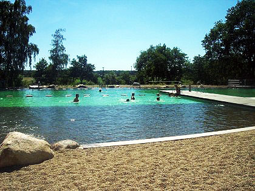
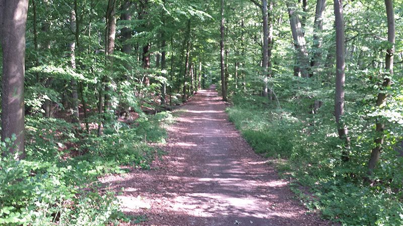
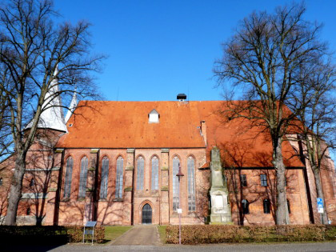
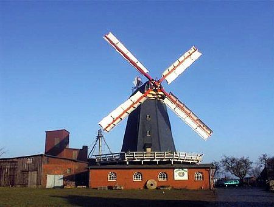

Bardowicker Strand
Der „Bardowicker Strand“ ist ein wunderschönes Naturbad für die ganze Familie.
Weitere InformationenFerienhaus in Bardowick bei Lüneburg
Gemütlich, sauber und modern: Das Gästehaus Perschall bietet Erholung, kurze Wege nach Lüneburg, Hamburg und in die Lüneburger Heide. Viel Natur direkt vor der Tür.
Über uns
Unser Gästehaus liegt im östlichen Teil von Bardowick. Sämtliche Einkaufsmöglichkeiten sind im Ort vorhanden.
Die Innenstadt von Lüneburg ist mit öffentlichen Verkehrsmitteln auf direktem Wege in ca. 10 Minuten zu erreichen. Haltestationen für Bus und Bahn befinden sich in unmittelbarer Nähe.
Hamburg und die Heide erreichen Sie in ca. 20 Minuten. Eine Stunde ist es bis zur Ostsee. Ferner bieten wir zahlreiche Golfplätze – den ersten erreichen Sie mit dem Auto in ca. 8 Minuten: das Golf-Resort Adendorf.

Landwehr und Bardowick
Spaziergänger und Hundebesitzer kommen bei uns in der Landwehr voll auf ihre Kosten. Weite Wälder und schöne Landschaften laden zu langen Spaziergängen ein.
Dieses Paradies ist nur 100 Meter von Ihrer Haustür entfernt.
Bardowick und Umgebung
Besuchen Sie den Bardowicker Dom, den Bardowicker Strand oder machen Sie einen Abstecher nach Lüneburg.

Der „Bardowicker Strand“ ist ein wunderschönes Naturbad für die ganze Familie.
Weitere Informationen
Entdecken Sie die Umgebung von Bardowick mit dem Fahrrad oder zu Fuß. Fahrräder stellen wir gerne kostenlos zur Verfügung.

Die Bardowicker Mühle sollten Sie unbedingt besuchen. Auch die Ilmenau lädt zu Spaziergängen und Picknick ein.
Das Haus
Einblicke in Wohnzimmer, Schlafzimmer, Küche, Badezimmer und Terrasse.
Preise
Unsere Preise verstehen sich inkl. MwSt., Nebenkosten, Bettwäsche und Handtüchern.
Bei unseren Preisen handelt es sich um Richtpreise. Wenn Sie einen längeren Aufenthalt wünschen, kann dieser individuell abgesprochen werden.
| Belegung | 1. Nacht | Jede weitere Nacht |
|---|---|---|
| Bis 2 Personen | 100,- € | 50,- € |
| Aufbettung / weitere Person Kinder bis 17 Jahre: 10 Euro | 20,- € | 20,- € |
| Haustiere | 5,- € pro Haustier und Nacht | |
Liebe Gäste, unser kleines Gästehaus soll für Sie wie ein zweites Zuhause sein. Wir haben uns mit der Einrichtung sehr viel Mühe gegeben und sind auf viele Wünsche unserer Gäste eingegangen.
Niemand beschädigt absichtlich Sachen, es kann jedoch jedem passieren, dass einmal etwas kaputt geht. Bitte teilen Sie uns entstandene Schäden mit.
Fenster und Türen sind beim Verlassen der Wohnung zu schließen. Bitte achten Sie darauf, dass alles Licht ausgeschaltet ist. Lüften sollte selbstverständlich sein.
Rauchen ist im Gästehaus nicht erlaubt. Auf der Terrasse können Sie gerne rauchen; dort ist ein Aschenbecher vorhanden.
Bitte geben Sie die Schlüssel nie aus der Hand. Ein Verlust ist umgehend zu melden.
Wir begrüßen Ihre Vierbeiner. Bitte sorgen Sie dafür, dass Haustiere nicht im Bett schlafen oder auf das Sofa gehen. Hunde sind während des Aufenthaltes ständig zu beaufsichtigen.
Mit Bestätigung einer Buchung haben Sie automatisch die Hausordnung anerkannt. Wir wünschen all unseren Gästen einen angenehmen Aufenthalt.
Belegungsplan
Hier sehen Sie die aktuelle Belegung unseres Gästehauses.
Zeitraum frei? Jetzt anfragen.
Kontakt
Anfahrt
Das Gästehaus liegt in Bardowick, nur wenige Kilometer von Lüneburg entfernt.
In OpenStreetMap öffnenDie Karte wird erst geladen, wenn Sie zustimmen. Dabei werden Ihre IP-Adresse und Browserinformationen an OpenStreetMap übertragen.
Gästehaus Perschall
Inhaber Sven und Steffi Perschall
Birkenweg 11
21357 Bardowick
Telefon: +49 4131 264644
Mobil: +49 171 5160116
E-Mail: urlaub@gaestehaus-perschall.com
Die Betreiber dieser Seiten nehmen den Schutz Ihrer persönlichen Daten sehr ernst. Personenbezogene Daten werden vertraulich und entsprechend der gesetzlichen Datenschutzvorschriften behandelt.
Die Nutzung der Webseite ist in der Regel ohne Angabe personenbezogener Daten möglich. Soweit personenbezogene Daten erhoben werden, erfolgt dies soweit möglich stets auf freiwilliger Basis.
Hinweis: Die Datenübertragung im Internet, zum Beispiel bei der Kommunikation per E-Mail, kann Sicherheitslücken aufweisen. Ein lückenloser Schutz der Daten vor dem Zugriff durch Dritte ist nicht möglich.
Sven und Steffi Perschall, Birkenweg 11, 21357 Bardowick. Bei Fragen zur Verarbeitung Ihrer Daten erreichen Sie uns unter urlaub@gaestehaus-perschall.com.
Diese Website wird über GitHub Pages bereitgestellt. Beim Abruf verarbeitet der Hostinganbieter technische Verbindungsdaten, darunter die IP-Adresse, Browserinformationen sowie Zeitpunkt und angeforderte Seiten. Weitere Informationen zur Verarbeitung und zu internationalen Datenübermittlungen finden Sie in der Datenschutzerklärung von GitHub.
Die eingebettete Karte wird erst nach Ihrem Klick auf „Zustimmen und Karte laden“ von OpenStreetMap geladen. Dabei werden insbesondere Ihre IP-Adresse und Browserinformationen an die Kartenserver übertragen. Informationen des Anbieters finden Sie in der Datenschutzerklärung der OpenStreetMap Foundation.
Die Freigabe wird nicht für weitere Seitenaufrufe gespeichert. Mit „Karte entfernen“ können Sie die Einbindung wieder beenden. Bereits übertragene Daten werden dadurch nicht zurückgeholt. Alternativ können Sie OpenStreetMap über den vorhandenen Link direkt öffnen.
Der Belegungskalender lädt eine Datei von dieser Website. Die öffentliche Anzeige enthält nur Belegungszeiträume, keine Gastnamen oder Kontaktdaten. Ferienhausmiete.de ist lediglich verlinkt; ein Kalender-Widget dieses Portals wird nicht geladen. Beim Öffnen externer Links gelten die Datenschutzhinweise der jeweiligen Anbieter.
Wenn Sie uns kontaktieren, verarbeiten wir Ihre mitgeteilten Kontaktdaten und den Inhalt Ihrer Anfrage zur Bearbeitung Ihres Anliegens und gegebenenfalls einer Buchung.